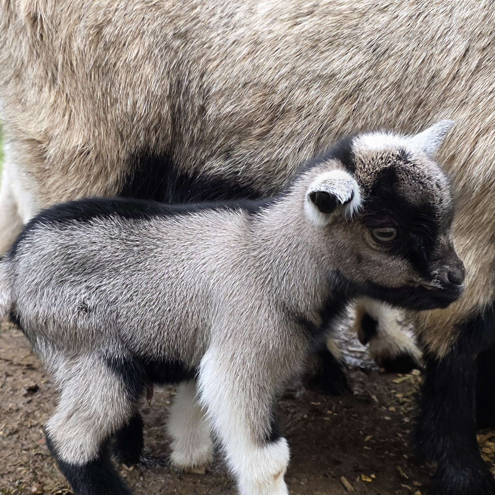
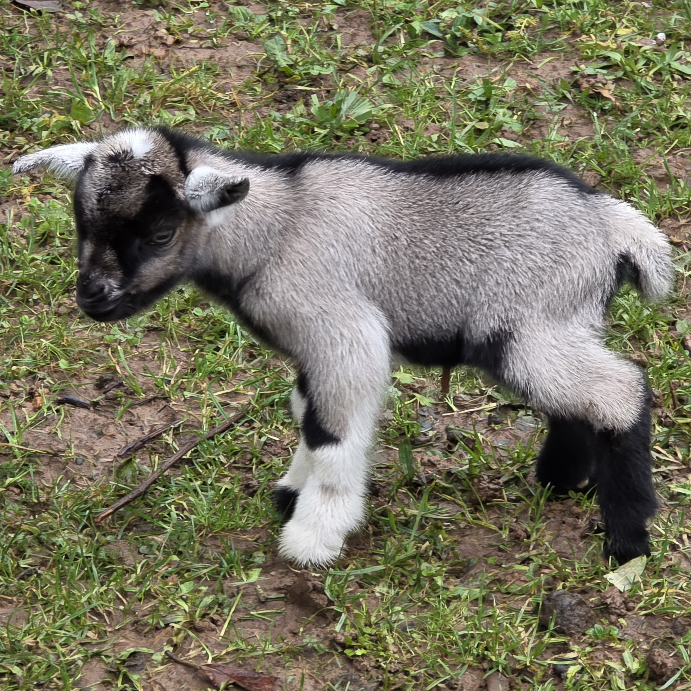
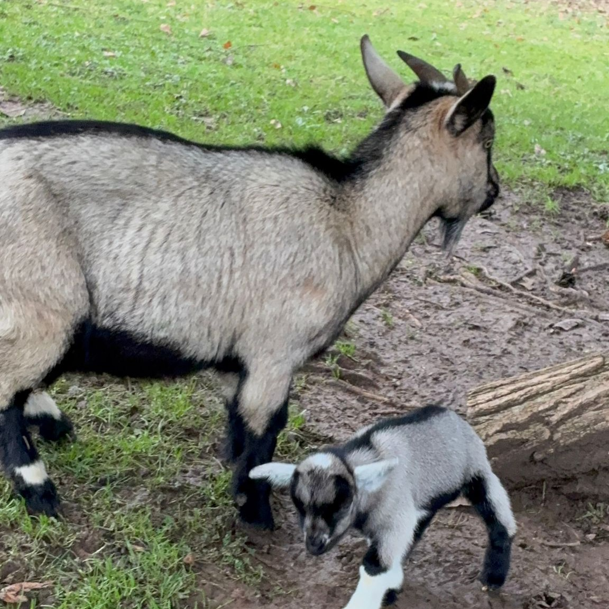

Informations générales
Race : Chèvre naine miniature
Âge : Né le 16/01/2026
Sexe : Mâle
Couleur : Grise, noire et blanche (type robe âne)
Poids : Non renseigné
Caractère
Curieux, sociable et très joueur. Il s’entend bien avec les autres chèvres et les animaux de la ferme.
Santé & alimentation
Alimentation variée : foin, herbe et légumes. Vaccinations à jour. Eau fraîche toujours disponible.


